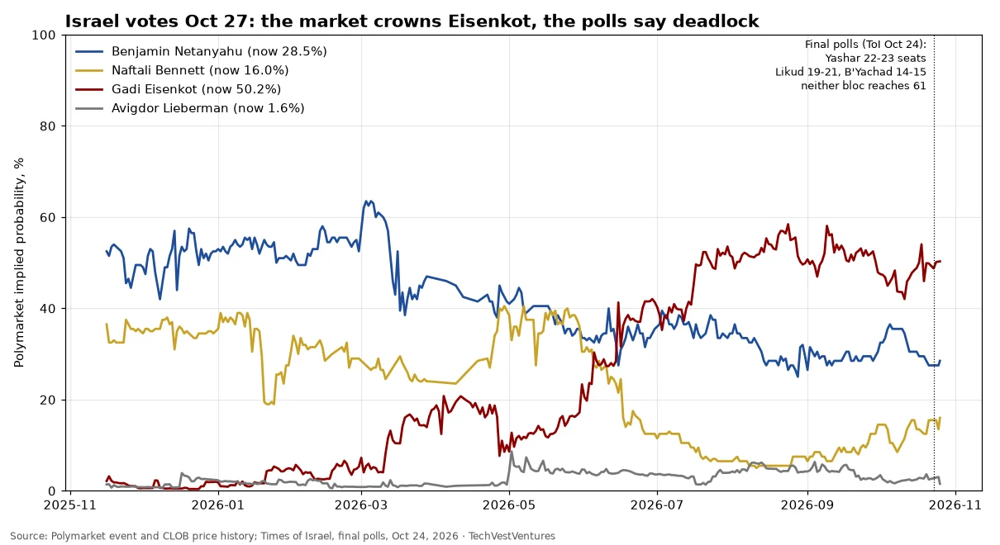

Q1. Israel Election

Polymarket's 'next prime minister of Israel' market (about $53 million traded since Nov 2025), daily prices. Eisenkot rose from about 2% to 50%, against 28% for Netanyahu and 16% for Bennett. But the final TV polls (Channel 13, Channel 12, Kan; Times of Israel, Oct 24) give Eisenkot's Yashar the most seats and still leave both blocs short of 61 (change bloc 52-56, Netanyahu bloc 50). If no coalition forms, Israel could face repeat elections with Netanyahu staying on as caretaker, so a coin-flip price on Eisenkot may be generous when the likeliest single outcome could be no new PM at all for months. This is a live test: the result will show who read the deadlock better.
Sources: Polymarket event and CLOB price history Times of Israel, final polls, Oct 24, 2026